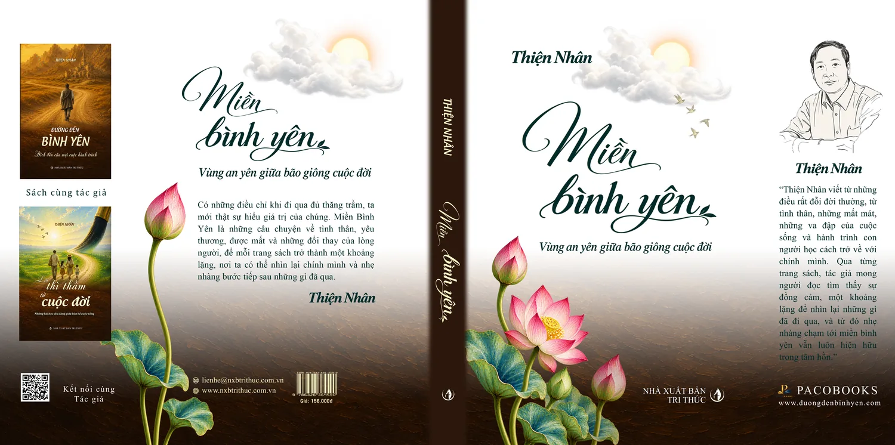

Có những câu hỏi theo con người suốt nhiều năm: rốt cuộc, ta phải đi bao xa để tìm một chỗ cho lòng mình được yên? Với Tác giả Thiện Nhân, câu hỏi ấy đi cùng những lần được mất, những cuộc gặp gỡ rồi chia xa, và đến một ngày trở thành cảm hứng cho tác phẩm Miền Bình Yên.
Miền Bình Yên không bắt đầu từ những điều lớn lao. Cuốn sách được viết từ một căn phòng bệnh trắng toát với mùi thuốc sát trùng, từ hình ảnh cha mẹ già đứng chờ con nơi đầu ngõ, từ một mối quan hệ từng hết lòng gìn giữ rồi vẫn phải buông tay. Những điều rất đời thường ấy, khi được nhìn lại trong đủ khoảng lặng, trở thành chất liệu cho từng trang viết.
Tác phẩm đi qua một nhận thức mà nhiều người từng trải: ta thường tin rằng chỉ cần thêm một khoản tiền, một mái nhà vững chãi, một người thật lòng thương mình, mọi thứ rồi sẽ ổn. Nhưng cuộc đời chưa bao giờ đứng yên để chờ những mong cầu ấy trọn vẹn. Từ đó, cuốn sách gợi mở rằng bình yên có lẽ không phải là một nơi để tìm đến, mà là điều mỗi người học cách giữ lấy bên trong mình.
Hơn 60 bài viết trong Miền Bình Yên là hơn 60 khoảng lặng – về tình thân, về những cuộc tình, về bản lĩnh giữa nghịch cảnh, về lòng tử tế và cách giữ cho tâm mình an. Tác giả Thiện Nhân không đặt ra những câu trả lời như một chân lý, bởi mỗi người có một cuộc đời và một hoàn cảnh riêng. Điều tác giả mong muốn là ở một trang nào đó, người đọc bắt gặp chính mình: một nỗi đau từng giấu kín, một người vẫn chưa thể quên, hay một mái nhà lâu rồi chưa trở lại.
Tác giả gửi gắm mong ước rằng sau khi khép sách, người đọc sẽ dịu dàng hơn với những điều đã cũ, bình thản hơn trước những gì không thể thay đổi, biết trân trọng người còn ở bên và biết giữ lấy chính mình giữa những đổi thay của cuộc đời.
Nếu Đường Đến Bình Yên là một chuyến đi, và Lời thì thầm từ cuộc đời là những khoảng lặng dịu dàng bên đường, thì Miền Bình Yên là nơi Tác giả Thiện Nhân dừng lại lâu hơn để chiêm nghiệm về được mất, hợp tan và những điều còn ở lại sau tất cả. Ba cuốn sách mang ba sắc thái khác nhau, nhưng cùng bắt nguồn từ một mong muốn giản dị: trở thành một khoảng lặng giữa đời sống nhiều bộn bề.
Tác giả mong Miền Bình Yên được đọc chậm rãi, theo nhịp của riêng mỗi người, dừng lại khi một câu chuyện khiến lòng chạnh lại. Bởi sau rất nhiều năm tháng kiếm tìm, có thể đến một ngày người ta nhận ra nơi mình muốn đến chưa từng nằm ở cuối một con đường xa xôi. Nó có thể chỉ là một buổi chiều rất bình thường, ngồi yên bên khung cửa và bỗng thấy lòng mình không còn muốn chạy đi đâu nữa.
Phần giới thiệu và thông tin đầy đủ về cuốn sách có tại trang Sách Miền Bình Yên trên tủ sách PACOBOOKS.
— Tác giả Thiện Nhân —